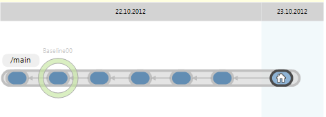
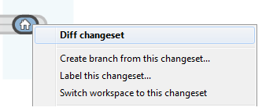
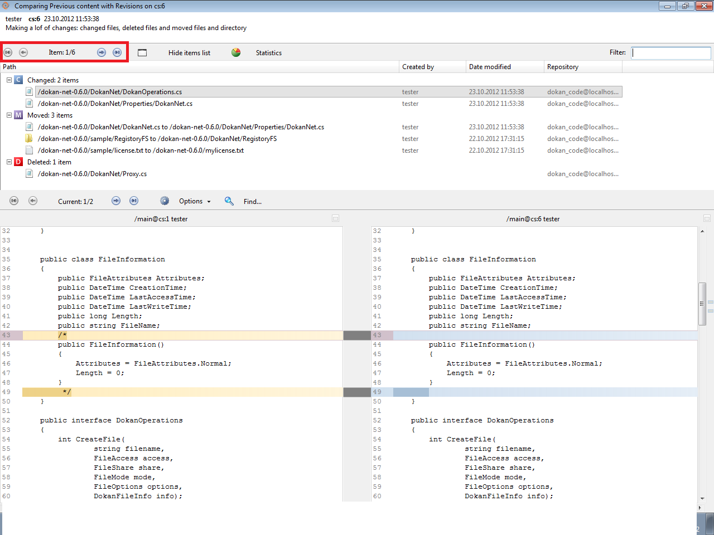

Let’s go to ”Branch Explorer” view to see the current state of the repository. Something like the following will show up:

Figure 1: Branch Explorer
Right click on the current changeset, and click on the “Diff changeset” action as the figure below:

Figure 2: Diff Changeset
Once the button is clicked you will see how comparing previous content with current content. The window will look like this:

Figure 3: Diff View
As you can see, there are 6 items to show diff, you can show each of them clicking on the arrows.
Great, you’ve finished the fourth lab.